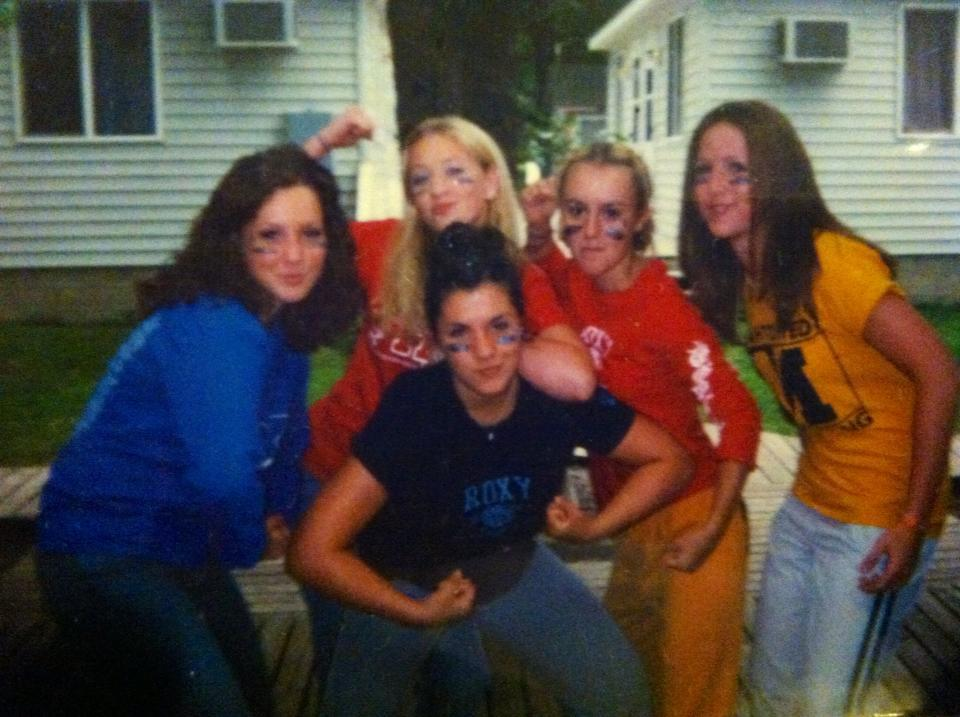

I am listening. Our children are watching.
I’d like to think I have a unique experience. Growing up I straddled the line of both parties.
In middle school I was invited to 'summer camp' by my best friend, a woman that decades later is still a close confidant.
After a loud and joyful bus ride up north I showed up to hands raised high, Jesus being proclaimed, worship music filling my dreary soul. I said YES.
Much to my democrat families dismay, I came home an evangelical Christian.
With the assumption that American Christian = Republican I was ALL IN.
By 16 I was listening to conservative talk radio, Rush Limbaugh being one of my favorites.
During the 2004 Bush vs Kerry election, I was still too young to vote but pursuing my civic duty, I joined our high schools Teenage Republican Group.
Our group of suburban white kids got invited to participate in the Minneapolis RNC convention. Being ushered to the first row, I shook the First Ladies hand after she proudly held up our homemade T-Shirt:
“Democrats making an ‘ass’ out of you and me!”
The ass being a picture of a donkey, the Democrat symbol, us feeling very clever.
Attending college in what was known as a rough neighborhood, my rose colored glasses of the world began to dim.
Not everybody held my experience, people were doing what they had to do to survive and feed their families.
Wanting to follow the words of Jesus to help the least of these, I interviewed for a volunteer position that had been advertised on the local Christian radio station.
It was an emergency shelter for women escaping physical abuse, located walking distance from my dorm.
Feeling very prepared and perfect for the position, I discussed my views on tax and reducing the expenditures to programs so people could ‘pull themselves up by their bootstraps.’
The kind-hearted director nodded politely before saying,
"sometimes it’s not so black and white, not all Christians hold the same political ideals.”
Leaving the interview I remember thinking, “she’s clearly not a Christian, good thing I won’t be receiving that role.”
They never called. I comforted myself by turning on Sean Hannity.
To be continued...
